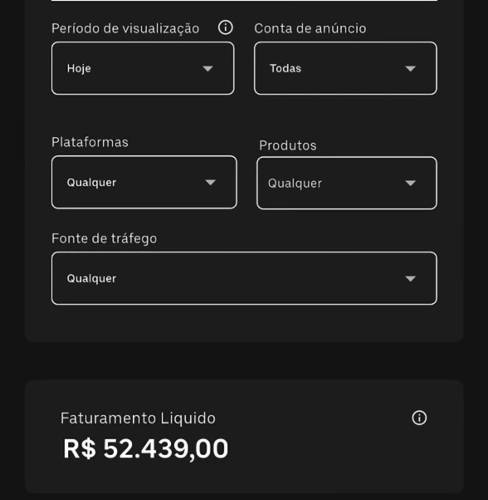
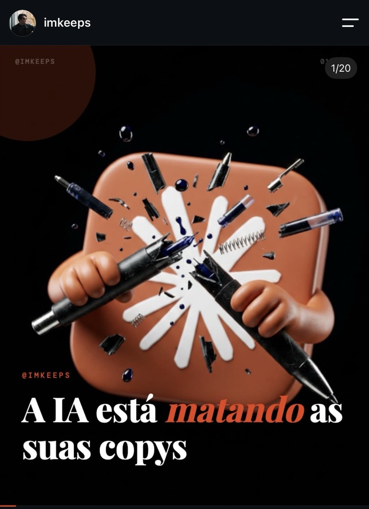
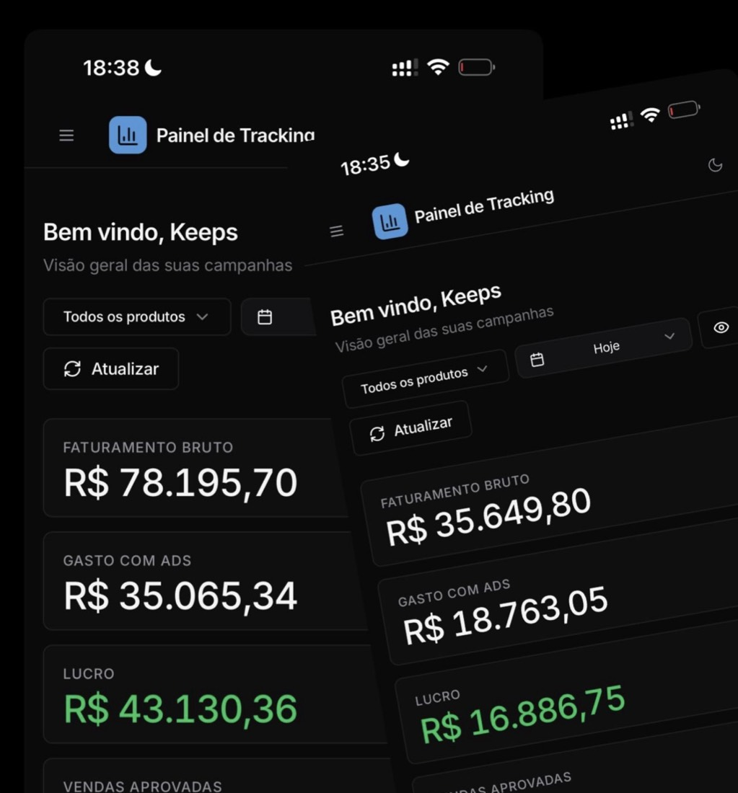
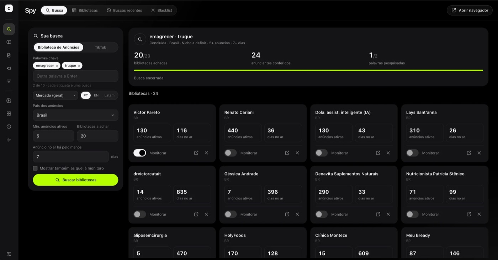
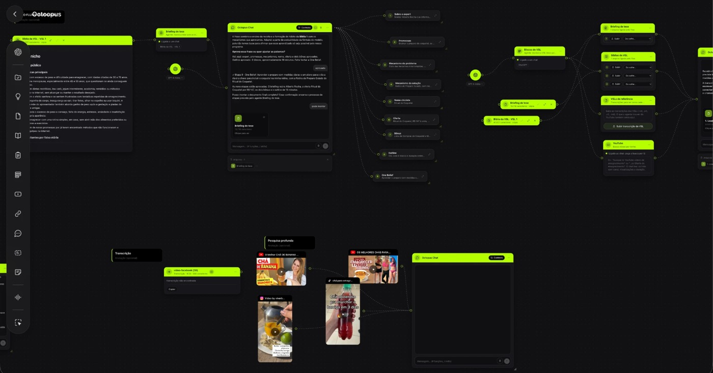
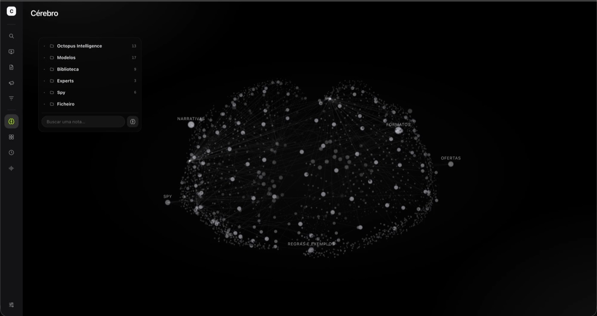
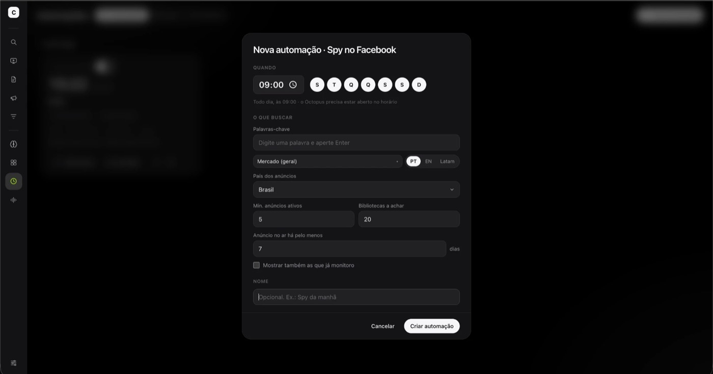
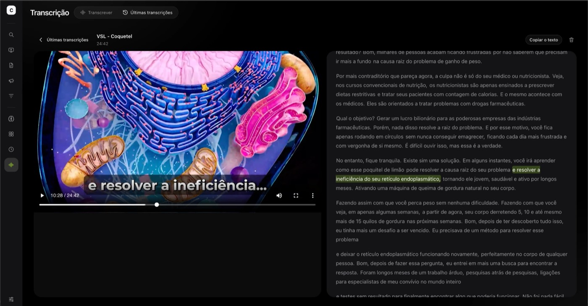

Tenha o SEGUNDO CÉREBRO que escreve suas VSLs e criativos como um copywriter 9D

52 mil em um único dia.
Esse não foi o meu recorde de faturamento diário, mas foi o resultado do oitavo dia de uma VSL e de criativos escritos 100% com IA.
E eu salvei isso por um motivo bem marcante: alguns meses atrás, eu era um inimigo mortal da IA.
E com muita razão. Eu tinha comprado tudo o que via pela frente falando de IA: prompts, agentes, skills… Só que as copys ficavam uma porcaria.
Algumas até vendiam, mas não chegavam nem perto de escalar como as minhas copys, ou as dos meus copywriters, escritas “na mão”.
Inclusive, falei muito mal de tudo isso no meu Instagram kkk…

Mas o que aconteceu para eu sair de um resultado horrível para 52 mil reais faturados em um único dia, com uma VSL e criativos feitos 100% com IA?
O segredo foi sentar a bunda na cadeira e estudar até cansar, de forma profunda…
Li os manuais das IAs, assisti a centenas de vídeos gringos e passei bastante tempo consumindo conteúdo no X (antigo Twitter).
E nisso eu descobri 3 coisas:
A IA é genérica.
Nem o Claude nem o ChatGPT sabem escrever VSLs ou criativos.
Skills são prompts. E prompt nada mais é do que um PEDIDO.
Então pensa comigo: a IA não sabe escrever copy de Direct Response, mas você faz um pedido para ela. O que isso muda? Praticamente nada kkk… Uma skill equivale a pedir para alguém pilotar um avião sem ser piloto.
5 elementos combinados.
Por fim, levantei a hipótese de que, se eu combinasse 5 elementos, poderia realmente transformar a IA em um copywriter Fod4!
E bom…
Deu certo! Essas foram as últimas duas ofertas que fiz usando…

Chamei tudo isso de OCTOPUS
Seu SEGUNDO CÉREBRO que escreve suasVSLs e criativos como um copywriter 9D.
Um fluxo de IA com 9 agentes, 15 skills e 196 arquivos de contexto.
Tudo o que você vai receber ao entrar hoje no Sistema Octopus





- Octo Spy
Descubra quem está escalando e quais anúncios estão rodando há semanas, sem perder horas rolando a Biblioteca de Anúncios da Meta.
- Octo Radar
Acompanhe as ofertas que você escolheu e veja quando elas sobem anúncio novo.
- Octo Work
Agende trabalhos no horário que quiser e acorde com tudo feito.
- Octo Transcrição
Transcreva VSLs e criativos diretamente dos fluxos.
- Octo DeepSearch
Pesquisa e contexto profundo no YouTube, Instagram e TikTok.
- Cérebro da sua operação
Todos os experts, ofertas, VSLs, anúncios e pesquisas num só lugar, num mapa visual que você navega e consulta.
- Octo Workflow
O Octopus usa uma tecnologia que orquestra diversos agentes, skills e contextos.
A mente que se abre a uma nova ideia jamais voltará ao seu tamanho original.Oliver Wendell Holmes